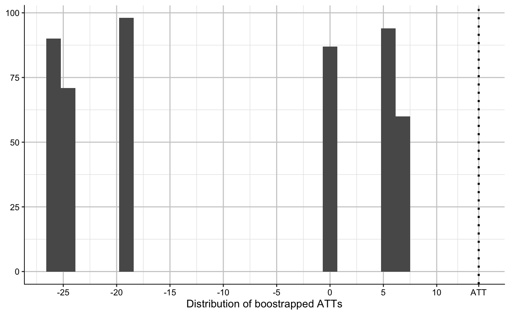
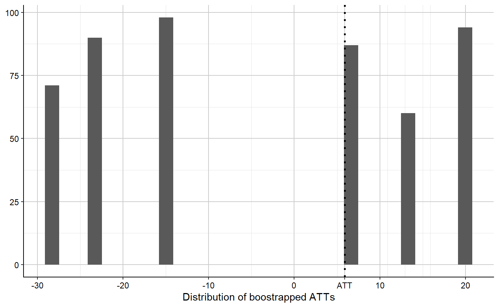

plac.dist.RdTakes the output object of multiple.synth creates a
distribution of placebo average treatment effects, to test the
significance of the observed ATE. Does so by sampling k placebos
(where k = the number of treated units) nboots times, and calculating
the average treatment effect of the k placebos each time.
plac.dist(multiple.synth, nboots = 500) plac_dist(multiple.synth, nboots = 500)
| multiple.synth | multiple.synth |
|---|---|
| nboots | Number of bootstrapped samples of placebos to take.
Default is |
The plot.
The observed average treatment effect.
Dataframe where each row is the ATT for one bootstrapped placebo sample, used to build the distribution plot.
Proportion of bootstrapped placebo samples ATTs which are more extreme than the observed average treatment effect. Equivalent to a p-value in a two-tailed test.
# \donttest{ ## Using the toy data from Synth: library(Synth) data(synth.data) set.seed(42) ## Run the function similar to the dataprep() setup: multi <- multiple.synth(foo = synth.data, predictors = c("X1", "X2", "X3"), predictors.op = "mean", dependent = "Y", unit.variable = "unit.num", time.variable = "year", treatment.time = 1990, special.predictors = list( list("Y", 1991, "mean"), list("Y", 1985, "mean"), list("Y", 1980, "mean") ), treated.units = c(2,7), control.units = c(29, 13, 17, 32), time.predictors.prior = c(1984:1989), time.optimize.ssr = c(1984:1990), unit.names.variable = "name", time.plot = 1984:1996, gen.placebos = TRUE, Sigf.ipop = 2, strategy = 'multiprocess' )#> #> X1, X0, Z1, Z0 all come directly from dataprep object. #> #> #> **************** #> searching for synthetic control unit #> #> #> **************** #> **************** #> **************** #> #> MSPE (LOSS V): 1.858825 #> #> solution.v: #> 0.0001343847 0.4182965 5.196e-06 0.2208002 0.1681828 0.1925809 #> #> solution.w: #> 0.0600808 0.5131245 0.004744006 0.4220507 #> #> #> X1, X0, Z1, Z0 all come directly from dataprep object. #> #> #> **************** #> searching for synthetic control unit #> #> #> **************** #> **************** #> **************** #> #> MSPE (LOSS V): 4.717187 #> #> solution.v: #> 0.003725274 0.01538125 0.1736298 0.00173208 0.000179908 0.8053517 #> #> solution.w: #> 0.004277386 0.1699176 0.2240579 0.6017472 #> #> #> X1, X0, Z1, Z0 all come directly from dataprep object. #> #> #> **************** #> searching for synthetic control unit #> #> #> **************** #> **************** #> **************** #> #> MSPE (LOSS V): 1.858825 #> #> solution.v: #> 0.0001343847 0.4182965 5.196e-06 0.2208002 0.1681828 0.1925809 #> #> solution.w: #> 0.0600808 0.5131245 0.004744006 0.4220507 #> #> #> X1, X0, Z1, Z0 all come directly from dataprep object. #> #> #> **************** #> searching for synthetic control unit #> #> #> **************** #> **************** #> **************** #> #> MSPE (LOSS V): 2656.612 #> #> solution.v: #> 0.1440231 0.1448752 0.01400467 0.1416816 0.2776082 0.2778073 #> #> solution.w: #> 1.95e-07 0.2887968 0.711203 #> #> #> X1, X0, Z1, Z0 all come directly from dataprep object. #> #> #> **************** #> searching for synthetic control unit #> #> #> **************** #> **************** #> **************** #> #> MSPE (LOSS V): 264.1643 #> #> solution.v: #> 0.1214093 0.1515365 0.1149586 0.1734734 0.3748487 0.0637735 #> #> solution.w: #> 1.25e-08 0.1320919 0.8679081 #> #> #> X1, X0, Z1, Z0 all come directly from dataprep object. #> #> #> **************** #> searching for synthetic control unit #> #> #> **************** #> **************** #> **************** #> #> MSPE (LOSS V): 93.91872 #> #> solution.v: #> 0.08306285 0.004095653 0.01394323 7.6773e-06 0.4739978 0.4248927 #> #> solution.w: #> 0.2398603 0.7601288 1.08983e-05 #> #> #> X1, X0, Z1, Z0 all come directly from dataprep object. #> #> #> **************** #> searching for synthetic control unit #> #> #> **************** #> **************** #> **************** #> #> MSPE (LOSS V): 14.0172 #> #> solution.v: #> 0.2057945 0.02112158 0.1991639 0.2274634 0.1543825 0.1920742 #> #> solution.w: #> 0.235689 0.7643078 3.1676e-06 #>## Plot with the average path of the treated units and the average of their ## respective synthetic controls: multi$p## Bootstrap the placebo units to get a distribution of placebo average ## treatment effects, and plot the distribution with a vertical line ## indicating the actual ATT: att.test <- plac.dist(multi) att.test$p#># }